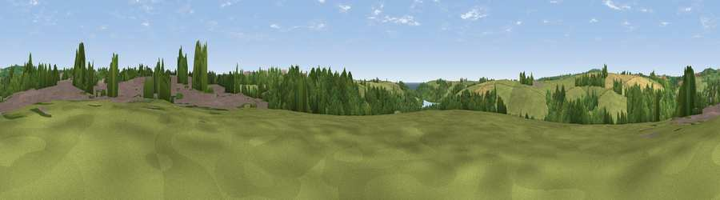

Viewpoint near Helston
#34267 in England · top 75% of its area beats it · near Helston · path 69 mWhere it is
The exact computed spot (SW 65725 26725). Click the marker for map links.
Public access: the nearest public right of way is about 69 m away — the final stretch may cross private land. Computed from Natural England's CRoW access layer and OpenStreetMap rights of way — not the legal definitive map. Always verify locally.
The view, rendered

A 360° render of this exact spot computed from the terrain model, tree cover and land cover — summer colours, afternoon light, calibrated against photographs of famous viewpoints. Real trees, hedges and buildings will differ in detail.
The panorama
Grey silhouette: terrain skyline in each direction (720 bearings, Earth curvature and refraction included). Dashed green: skyline with trees (+15 m) and buildings (+8 m) as obstacles. Blue strip: how far the ground is visible on each bearing.
Where the view opens
Wedge length = distance to the farthest visible ground on that bearing (vegetation-aware). Rings at 10, 25 and 50 km.
What fills the view
47% grassland · 32% woodland · 11% cropland · 8% built-up · 1% water
Angular shares of the visible panorama (visual magnitude), not map area. Landscape diversity 0.54 (0–1 Shannon).
Key numbers
More beautiful places nearby
The staircase of upgrades: each row has a higher view potential than everything closer. Driving times are estimates from straight-line distance, calibrated against real road routing — check an actual route before setting out.
| Place | Direction | Drive | Score |
|---|---|---|---|
| Viewpoint near Helston | S · 1 km | ~2 min | 36.8 |
| Viewpoint near Helston | NW · 1 km | ~3 min | 37.3 |
| Viewpoint near Porthleven | SSW · 3 km | ~7 min | 68.8 |
| Viewpoint near Ashton | W · 5 km | ~12 min | 71.1 |
| Viewpoint near Ashton | WNW · 6 km | ~13 min | 81.3 |
| Tregonning Hill | WNW · 7 km | ~14 min | 83.0 |
| Rosewall Hill | WNW · 21 km | ~35 min | 88.0 |
| Viewpoint near Combe Martin | NE · 153 km | ~176 min | 88.9 |
50.09433, -5.27691 · source: screening · position refined by local search. Computed location — check access rights before visiting.